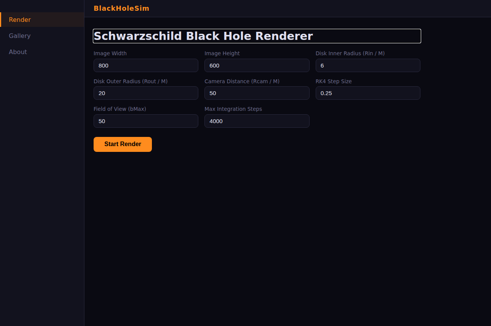
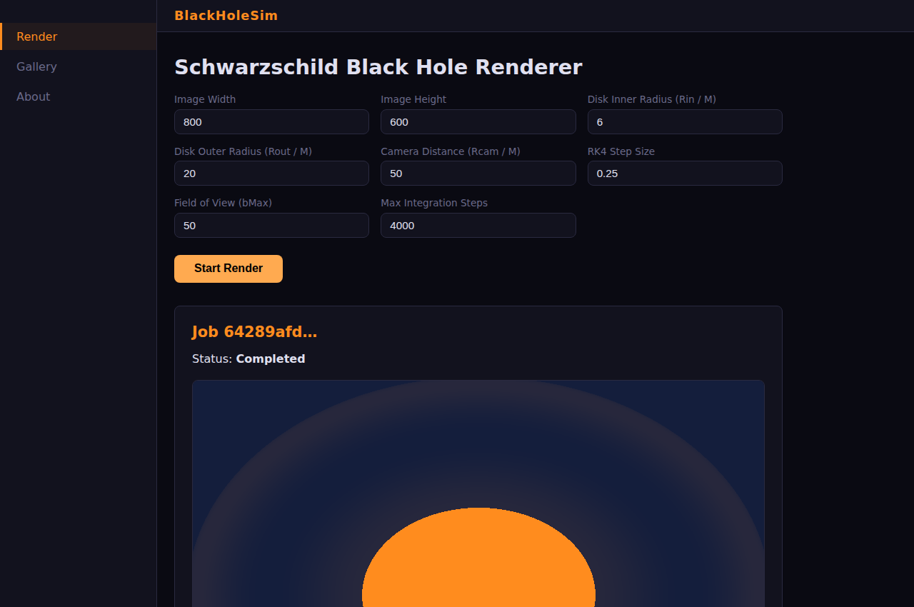
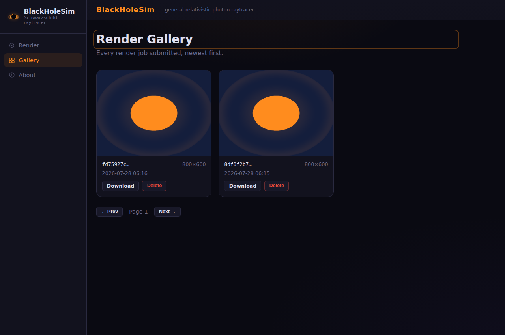
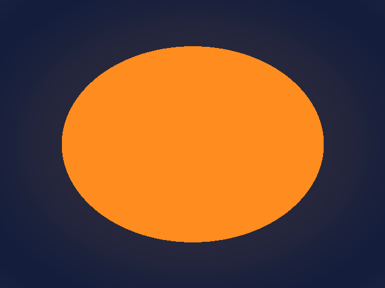
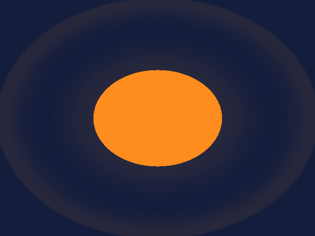
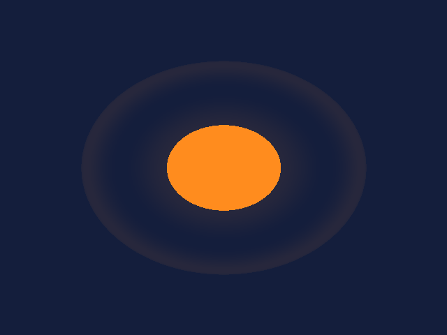

purposePhoton paths around a black hole, computed honestly
BlackHoleSim traces light itself. For every pixel, a photon is launched backwards from the camera and its geodesic — the path light follows through curved spacetime — is numerically integrated in the Schwarzschild metric with a fourth-order Runge–Kutta scheme. Rays that spiral into the horizon paint the shadow; rays that cross the thin accretion disk pick up its colour; rays that escape reach the sky. The bright ring bending over and under the hole is not an artistic flourish — it is gravitational lensing falling out of the equations, the same effect that makes the far side of the disk visible from the front.
What started as a single C# console renderer is now a full-stack system: the physics core, a one-shot CLI, a REST API that runs renders as background jobs, and a Blazor WebAssembly UI — all sharing one integrator, so the picture from the terminal and the picture from the browser come from the same code path.
the geometry
ds² = −(1−2M/r)dt² + dr²/(1−2M/r) + r²dφ²
Schwarzschild metric in the equatorial plane, G = c = 1.
the motion
H = ½ gᵘᵛ pᵤ pᵥ = 0
Null-geodesic Hamiltonian, integrated per ray with RK4.
the landmarks
horizon 2M · ISCO 6M · b꜀ = 3√3 M
Rays below the critical impact parameter are truly captured — the shadow is physics, not paint.
in the browserSubmit a render, watch it happen, keep it
Sign in, choose the parameters — disk radii, camera distance, resolution, field of view — and submit. The API queues the job, a background worker integrates a geodesic per pixel with live progress, and the finished PNG lands in your private gallery. Renders belong to the account that made them.



one knob, three worldsThe field of view is physics too
Same black hole, same disk — only BMax, the widest photon impact parameter
sampled, changes. Too narrow and every ray crosses the disk before it can escape or fall in:
no shadow, no sky, just disk. Too wide and the whole scene shrinks to a speck.



the piecesOne integrator, five places to stand
BlackHoleSim.CoreThe physics: metric, RK4, raytracer, image encoding. Everything else orbits this.BlackHoleSim.ConsoleAppOne-shot CLI renderer — a .ppm file and nothing else required.BlackHoleSim.ApiASP.NET Core minimal API: render jobs on a channel queue, a hosted worker, Postgres for job state and finished PNGs.BlackHoleSim.WebBlazor WebAssembly UI: render form with live progress, paginated gallery.authserviceThis deployment's own identity service (a pinned image of a separate project) — issues the RS256-signed tokens the API verifies..NET 9 · Blazor WASM · EF Core + PostgreSQL 16 · xUnit (RK4 convergence, Hamiltonian conservation, horizon-capture tests) · Aspire for local dev · deployed on Fly.io by pushing a tag.
deployed on fly.ioFour apps, one per service
The web app only hands the browser a bundle — after that, the browser talks to the API and the identity service directly, cross-origin. Server-side there are exactly three edges: two private ones into Postgres, and one deliberate public one for key discovery.
web and auth scale to zero. Server-side, Postgres is reachable only over
the private network, while the API reaches auth over its public hostname — the one arrow worth
reading twice.
the edgesEvery arrow, spelled out
| Edge | What moves | Why this address |
|---|---|---|
| ① browser → web | The Blazor WASM bundle, plus appsettings.json rewritten at container start with the API and auth URLs. |
Only a browser ever calls this app — a cold start is a slow first page, not a failed call. |
| ② browser → auth | Register, sign-in, token refresh. Issues RS256-signed JWTs; never proxied through the API. | Cross-origin from the web app's origin, allowed explicitly via CORS. |
| ③ browser → api | All /api/* calls with Authorization: Bearer — submit render, poll status, fetch PNG, delete. |
Same CORS story; the API validates the token signature locally on every request. |
| api → auth | Public signing keys only, from /.well-known/jwks.json — fetched lazily, then cached. The API holds no key material and cannot mint tokens. |
Deliberately the public hostname, not .internal: auth scales to zero and only proxy traffic wakes a stopped machine. |
| api → postgres | Job state and finished PNG blobs, database blackholesim. |
Private network only — the database has no public IP at all. |
| auth → postgres | Accounts and refresh tokens, in its own logical database authservice. |
Same instance to avoid a second always-on Postgres; separate database, not a shared schema. |
operationsDeploying is pushing a tag
A v* tag runs the pipeline: tests, then building only the images that changed since
the previous tag, then deploying postgres → auth → api → web. An app that does not
exist yet counts as changed, so one tag against an empty Fly organisation provisions everything.
The deploy gate checks what a health probe cannot: that the identity service's JWKS actually
publishes a key — without one it would serve a valid but empty key set, and every token would be
rejected while everything looked green.
The API keeps one machine pinned so a background render is never stopped mid-flight; web and auth scale to zero between visits. Sizing, cost and the reasoning behind each number live in flyio/INFRASTRUCTURE-ANALYSIS.md.